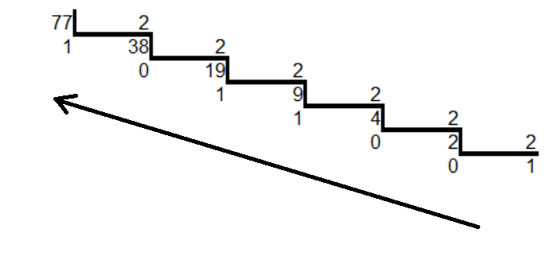

Un sistema de numeración es un conjunto de simbolos y reglas que permiten representar datos numéricos. La norma principal en un sistema de numeración posicional es que un mismo símbolo tiene distinto valor según la posición que ocupe.
El sistema de numeración que utilizamos habitualmente es el decimal, que se compone de diez símbolos o dígitos (0, 1, 2, 3, 4, 5, 6, 7, 8 y 9) a los que otorga un valor dependiendo de la posición que ocupen en la cifra: unidades, decenas, centenas, millares, etc.
El valor de cada dígito está asociado al de una potencia de base 10, número que coincide con la cantidad de símbolos o dígitos del sistema decimal, y un exponente igual a la posición que ocupa el dígito menos uno, contando desde la derecha.
En este sistema el número 528, por ejemplo, significa:
En el caso de números con decimales, la situación es análoga aunque, en este caso, algunos exponentes de las potencias serán negativos, concretamente el de los dígitos colocados a la dereca del separador decimal. Por ejemplo, el número 8245,97 se calcularía como:
El sistema de numeración binario utiliza sólo dos dígitos, el cero (0) y el uno (1), que tienen distinto valor dependiendo de la posión que ocupen. El valor de cada posición es el de una potencia de base 2, elevada a un exponente igual a la posición del dígito menos uno. Se puede observar que, tal y como ocurría con el sistema decimal, a base de la potencia coincide con la cantidad de dígitos utilizados (2) para representar los números.
De acuerdo con estas reglas, el número binario 1011 tiene un valor que se calcula así:
Convetir un número decimal al sistema binario es muy sencillo: basta con realizar divisiones sucesivas por 2 y colocar los restos obtenidos, en cada una ellas. Para formar el número binario tomaremos los restos en orden inverso al que han sido obtenido. Por ejemplo:
 7710=10011012
La cantidad de dígitos necesarios, para representar un número en el sistema binario, dependerá del valor de diche número en el sistema decimal. En el caso anterior, para representar el número 77 han hecho falta 7 dígitos. Para representar números mayores a 255 se necesitarán más de ocho dígitos, porque 28=256 y, por lo tanto, 255 es el número más grande que puede representarse con ocho dígitos.
Es importante distinguir entre los números que pueden representarse con n dígitos binarios, que es el 2n, y el mayor de esos números, que es una cantidad menos, es decir, 2n-1.
El proceso para convertir un número del sistema binario al decimal es aún más sencillo; basta con desarrollar el número, teniendo en cuenta que el valor de cada dígito está asociado a una potencia de 2, cuyo exponente es 0 en el bit situado más a la derecha, y se incrementa en una unidad según vamos avanzando posiciones hacia la izquierda, tal y como se muestra en el siguiente ejemplo:
El inconveniente de la codificación binaria es que la representación de algunos números resulta muy larga, Por este motivo se utilizan otros sistemas de numeración que resulten más cómodos de escribir: el sistema octal y el sistema hexadecimal. Afortunadamente, resulta muy fácil convertir un número binario a octal o a hexadecimal.
En el sistema octal, los números se representan mediante ocho dígitos diferentes; 0, 1, 2, 3, 4, 5, 6 y 7. Cada dígito tiene, naturalmente, un valor distinto dependiendo del lugar que ocupen. El valor de cada una de las posiciones viene determinado por las potencias de base 8. La conversión de un número decimal a octal, y viceversa, se realiza del mismo modo que la de los números binarios, aunque, lógicamente, se emplea como base el número 8 en vez del 2.
La conversión de un número decimal a octal se hace del mismo modo: mediante divisiones sucesivas por 8 y colocando los restos obtenidos en orden inverso. Por ejemplo:
15 : 8 = 1 Resto: 7
1 : 8 = 0 Resto: 1
12210 = 1728
La conversión de un número octal a decimal es igualmente sencilla. Por ejemplo:
2378=15910
En este sistema, los números se representan con dieciséis símbolos: 0, 1, 2, 3, 4, 5, 6, 7, 8, 9, A, B ,C, D, E y F. Se utilizan los caracteres A, B, C, D, E y F representando las cantidades decimales 10, 11, 12, 13, 14 y 15 respectivamente, porque no hay dígitos mayores que 9 en el sistema decimal. El valor de cada uno de estos símbolos depende, como es lógico, de su posición, que se calcula mediante potencias de base 16.
Ensayemos la conversión decimal a hexadecimal del número 1735:
108 : 16 = 6 Resto: C (1210)
6 : 16 = 0 Resto: 6
173510=6C716
Ensayemos también la conversión inversa, de hexadecimal a decimal número 1A3F:
1A3F16=671910
Cada dígito de un número octal equivale a tres digitos en el sistema binario. Por tanto, en el modo de covertir un número entre estos sistemas de numeración equivale a “expandir” cada dígito octal a tres dígitos binarios, o en “contraer” grupos de tres caracteres binarios a su correspondiente dígito octal. Por ejemplo:
7508=1111010002
Análogamente, la conversión entre números hexadecimales y binarios se realiza “expandiendo” o “contrayendo” cada dígito hexadecimal a cuatro dígitos binarios. Por ejemplo:
1F616=0001111101102
En caso de que los dígitos binarios no formen grupos completos (de tres o cuatro dígitos, según corresponda), se debe añadir ceros a la izquierda hasta completar el último frupo, Por ejemplo: